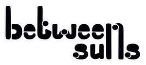

Trade Mark Journal No.2025/050 12 December 2025
UK00004304728 3 December 2025 (9,16,25,41)

- Class 9
- Tape recordings of music; Music recordings; Downloadable music sound recordings; Downloadable digital music; Audio tapes featuring music; Electronic sheet music, downloadable; Musical video recordings; Phonograph records featuring music; Downloadable music files; Downloadable musical sound recordings; Digital music downloadable from the Internet; Musical recordings; Musical sound recordings; Musical cassettes; Video recordings; Downloadable video recordings; Downloadable video files; Downloadable video recordings featuring music; LP records; Audio discs; Acoustic discs; Recording discs; Recording disks; Sound recording discs; Sound recording tapes; Tape cassettes; Audio cassettes; Cassettes [audio]; Music cassettes; Audio tape cassettes; Audio recordings; Vinyl records; Electronic photo albums; Recorded film; Recorded films; Sound recordings; Downloadable sound recordings; Records [sound recordings]; Audio visual recordings; Compact discs featuring music; Sound records; Musical recordings in the form of discs; Audiovisual recordings; Digital recordings.
- Class 16
- Printed stationery; Printed flyers; Photographs [printed]; Printed photographs; Printed books; Printed cards; Printed advertisements; Printed paper labels; Printed paper invitations; Printed tickets; Printed visuals; Printed packaging materials of paper; Printed programmes; Printed promotional material; Printed advertising boards of paper; Adhesive printed labels; Printed art reproductions; Printed stories in illustrated form; Posters; Advertising posters; Flyers; Postcards; Postcards and picture postcards; Picture postcards; Graphic art prints; Graphic prints; Art prints; Prints; Engravings [prints]; Stickers; Decals; Graphic art reproductions; Packaging materials; Stickers [stationery]; Adhesive stickers; Decorative stickers for helmets; Decorative stickers for cars; Paper gift tags; Packaging boxes of cardboard; Coasters of cardboard; Pens; Temporary tattoos; Adhesive lettering; Cardboard badges; Paper badges; Albums; Marking stamps; Seals [stamps].
- Class 25
- Clothing; Knitwear [clothing]; Jackets [clothing]; Caps; Caps with visors; Headwear; Shoes; Boots; Parts of clothing, footwear and headgear; Wristbands; Gloves; Socks; Socks and stockings.
- Class 41
- Music recording; Recording of music; Music publishing and music recording services; Music performances; Live music concerts; Live music performances; Performance of music; Performance of music and singing; Production of music; Music production; Production of music concerts; Production of music shows; Music publishing; Production of sound and music recordings; Production of sound recordings; Production of sound and video recordings; Production of musical recordings; Production of audio recordings; Performing of music and singing; Live musical performances; Live band performances; Band performances (Live -); Audio and video production, and photography; Audio, video and multimedia production, and photography; Production of video and audio recordings; Video production; Music concerts; Audio recording and production; Audio production.
Nausicaa Martinez